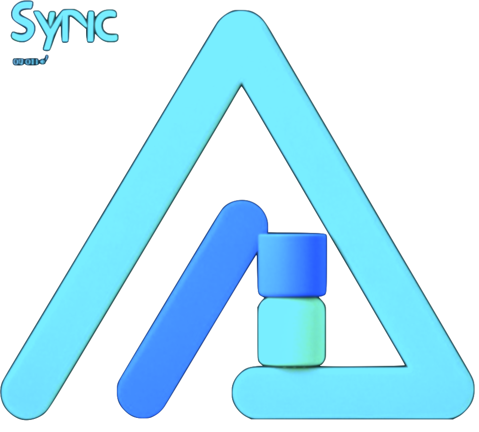

修改密码
退出
正在加载配置...

Alist-Sync 配置中心
如果好用，请Star！非常感谢！
GitHub
Gitee
DockerHub
基础连接参数
服务地址
必填项
用户名
密码
令牌
用户名密码和令牌至少填写一项
测试连接
保存连接配置
重置
同步配置
添加任务
任务名称
同步目标差异处置策略
同步模式
源存储器
请选择
目标存储器
同步目录
源目录
目标目录
排除目录
定时调度器
查看时间
执行时间
保存同步配置
立即执行
查看日志
重置
导出配置
导入配置